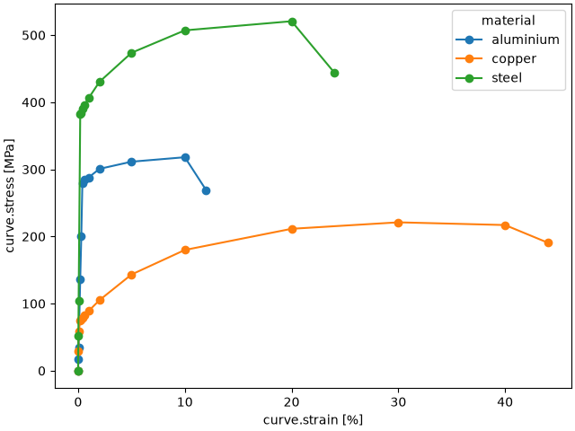
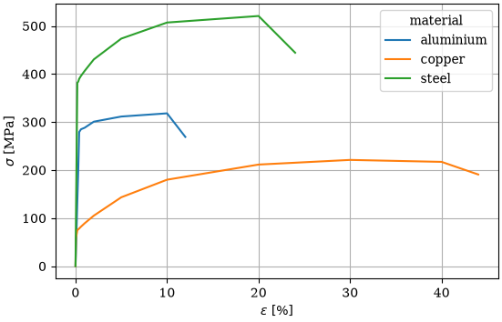
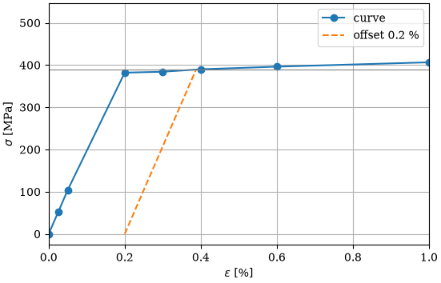
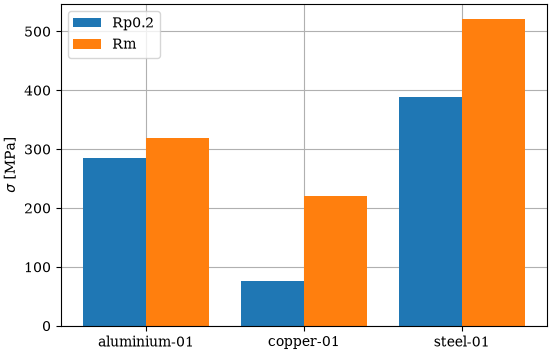
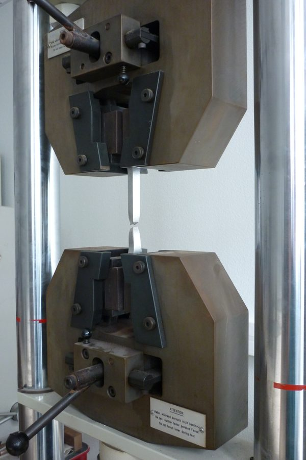

SampleKit¶
Sample data in plain Markdown: computed, current, tracked.
Every experimental project ends up with the same questions. Which value was computed from which measurement? Was this table made before or after the thickness was measured again? Is the figure in the draft still right? Spreadsheets cannot answer them, and a database keeps your data in a format that only its own software can read.
With SampleKit, each sample is one Markdown file that you can open in any editor, and the answers come with it:
computed: the values that derive from your measurements are computed by formulas you write in Python;
current: SampleKit knows which results still rest on the measurements they were computed from, and tells you which do not, and why;
tracked: every change is kept in the project's history, with the command that made it. The history is a git repository that SampleKit runs itself: you need neither to install git nor to use it.
At a glance¶
To… |
See |
|---|---|
keep each sample in a file you can read anywhere |
|
compute values with formulas you write in Python |
|
know which results no longer hold, and why |
|
write tables for another program or a paper |
|
draw figures in one style for the whole project |
|
see, compare and take back any change |
|
work from a full-screen view, or from Python |
Install¶
SampleKit is a command line, samplekit, and a Python package of the same
name. With Rust installed, cargo builds the command line on any system; then,
in a folder of your own, init makes it a project, with its own Python
environment holding the package, where your formulas run:
cargo install samplekit --locked --version 1.0.0-rc.2
samplekit init --write
Install SampleKit gives each step, on Linux, macOS and Windows: without Rust, from a release's archive; and the package by pip or uv, into an environment of your own.
What SampleKit guarantees¶
Reading computes nothing. Values are computed when you ask, never as a side effect of looking at them.
Nothing is written without a preview. Every command that changes a file shows the change first;
--writeconfirms it.Your note is yours. The text below the data is never rewritten, unless you ask:
set note=…replaces it.A failure stays visible. A formula that fails is marked as failed, with its error: its old number is never passed off as current, and a file written from it says so, and ends with an error.
Plain files, always. No database, no binary format: if SampleKit disappeared tomorrow, your data would still be readable.
Samples and projects¶
The rest of this page builds one example, a step at a time: a few material
specimens, tested in tension. SampleKit carries it as a demo in five
steps, each a project to try the commands on: samplekit alone opens the
start page, where g, then The demo, writes it and opens its first step.
One sample, one file¶
A sample is a Markdown file. At the top, between the --- lines, are its
data; below is a free note, which SampleKit keeps as you wrote it (the file's
format):
---
schema_version: 1
name: steel-01
material: steel
grade: S355
direction: L
tested: 2026-03-04
properties:
width: {v: 12.51, unit: mm}
thickness: {v: 2.0, unit: mm}
---
Tested at 2 mm/min, along the rolling direction.
material, grade, direction and tested are attributes: free facts
about the sample. width and thickness are properties: what was
measured, with a value v and a unit (samples and their
files). A sample may also carry
tags, tags: [reference, rerun], words that group samples across their
attributes: samplekit tag add writes them, and a filter selects by them.
Being plain text, the file opens in any editor, and fits wherever text does: a
note-taking app, a synchronised folder, or a git repository if you use one.
A project: a folder of samples¶
A project is a folder holding such files, and a .samplekitrc that marks
it as one (projects):
tensile-tests/
├── .samplekitrc marks the folder as a project
└── samples/
├── aluminium-01.md one file per sample
├── copper-01.md
└── steel-01.md
.samplekitrc is where the project's settings will go. For now it holds one
line, the version of SampleKit's format the project is written in:
schema_version = 1
Reading them: lists, columns, filters¶
That is all SampleKit needs. From the project's folder, samplekit . lists
the samples:
$ samplekit .
samples/aluminium-01.md
samples/copper-01.md
samples/steel-01.md
A command reads from left to right: samplekit, the program; then what to
read. . is the folder you are in, read with every folder below it,
samples/ here; a command that names no folder reads the same. A folder or a
file named, such as samples/steel-01.md, is read alone (which folders a
command reads). Given
nothing else, it lists the samples' files, one per line.
samplekit alone, with nothing after it, opens the terminal
interface: a full-screen view of the same samples, where
what this page does with commands is done with the keyboard. It lists and
filters the samples, opens one, changes a value, computes, draws a figure,
runs a script and reads the history.
Name columns with -c, by the names the files use, and the list becomes
a table:
$ samplekit -c material,grade,width,thickness
name material grade width [mm] thickness [mm]
────────────────────────────────────────────────────────────────
aluminium-01 aluminium 6061-T6 12.50 1.99
copper-01 copper C11000 12.50 2.00
steel-01 steel S355 12.51 2.00
3 of 3 samples
name was not asked for: in a terminal, SampleKit adds it first, dimmed, so
that each row says which sample it is. In a pipe or a file, a table holds only
the columns asked for, and -c name,… asks for it. [render] identify in
.samplekitrc adds the file's name instead, or nothing (the
setting). The units come from the files.
A filter selects the samples you ask about:
$ samplekit -f 'material == aluminium || direction == T' -c material,direction
name material direction
────────────────────────────────────
aluminium-01 aluminium L
copper-01 copper T
2 of 3 samples
-f takes a condition written with the fields' names: ==, !=, <, >,
&& for and, || for or, ! for not, and words such as has or
is missing (filters). Here, the aluminium specimens,
and those cut across the rolling direction, T. The quotes keep the shell
from reading || itself.
-s sorts by a field, a - before it for the highest first; -f 'tags has reference' would select the samples tagged reference:
$ samplekit -c material,width -s -width
name material width [mm]
─────────────────────────────────────
steel-01 steel 12.51
aluminium-01 aluminium 12.50
copper-01 copper 12.50
3 of 3 samples
Checking them¶
validate reads every file and says what is wrong in it, before a table or a
formula reads it wrong: a file that does not read, a unit that contradicts the
others, a value outside the range the project declares. Here, a fourth
specimen whose width was typed in centimetres:
$ samplekit validate
copper-02 width: two units — mm on 3, cm on 1
4 samples · 1 defect · 0 notes
error: 1 defect in 1 file
That specimen was a trial, and its file is removed, samplekit samples/copper-02.md remove --write: the rest of this page goes on with the
three specimens. It exits with an error
while a defect remains, so that a script or a continuous integration job
stops there (check a project in continuous
integration).
The model: what a sample holds¶
Everything so far works without anything more. But keeping a project by hand is not what SampleKit is for: a spreadsheet does that well enough. SampleKit starts to work for you once it knows what a sample is.
That is the model: a Python class, in a file beside the samples, that declares what a specimen holds and in which units (a model and its formulas):
import samplekit as sk
class Specimen(sk.Sample):
"""A tensile specimen: what it holds, and in which units."""
def __init__(self, path=None, name=None):
super().__init__(path, name=name)
# Measured with a micrometer.
self.width = sk.Property(unit="mm")
self.thickness = sk.Property(unit="mm")
The project's .samplekitrc names it, in a [model] section: the file, the
class in it, and the Python environment that runs it (a folder made with
python -m venv, holding the samplekit package).
schema_version = 1
[model]
path = "model/specimen.py"
class = "Specimen"
python = ".venv"
SampleKit can also write the files for you. new creates a sample in the
folder you name, with its fields given as field=value, and set changes the
fields of an existing one, as in samplekit samples/steel-01.md set thickness=2.01 (new and
set in the reference). Now that the model
declares the width and the thickness in millimetres, a value given this way is
written with its unit, rather than as a bare number:
$ samplekit samples new steel-03 material=steel width=12.5 thickness=2.0
samples/steel-03.md · new sample
material — → steel
width — → 12.5 mm
a property model/specimen.py declares
thickness — → 2 mm
a property model/specimen.py declares
apply these changes? [y/N] n
nothing written
Like every command that changes a file, new first shows what it would write
and asks before writing. Here the answer was no, so nothing was written. samplekit validate checks every
file against the model: a thickness
written thin, rather than a number, is a defect. And the model is where the
formulas will go, as the next sections show.
Readings and their statistics¶
The width and the thickness are not known exactly: each was measured three times with a micrometer, and the values written so far were means worked out by hand. Write instead what was read, in place of each value, in every sample:
---
# … the attributes, as above …
properties:
width: {readings: [12.494, 12.528, 12.518], unit: mm}
thickness: {readings: [1.995, 2.004, 2.008], unit: mm}
---
Tested at 2 mm/min, along the rolling direction.
and say, in the model, how readings give a value (readings and their statistic):
import samplekit as sk
class Specimen(sk.Sample):
"""A tensile specimen: what it holds, and in which units."""
def __init__(self, path=None, name=None):
super().__init__(path, name=name)
# Measured three times with a micrometer: the value is the mean of the
# readings, and the uncertainty their standard error.
self.width = sk.Property(
unit="mm",
value=sk.stats.mean,
uncertainty=sk.stats.standard_error,
)
self.thickness = sk.Property(
unit="mm",
value=sk.stats.mean,
uncertainty=sk.stats.standard_error,
)
The files now hold the readings and no value: the means written by hand are gone, and the model's are not taken yet, since reading the files computes nothing. Until you ask, the width and the thickness are empty:
$ samplekit -c width,thickness
name width thickness
────────────────────────────────
aluminium-01 — —
copper-01 — —
steel-01 — —
3 of 3 samples
samplekit compute runs the model's formulas, here the mean and its standard
error. It asks first whether to compute, then shows the results and asks
whether to write them:
$ samplekit compute
model model/specimen.py
sample value state
─────────────────────────────────────────
aluminium-01 width never computed
aluminium-01 thickness never computed
copper-01 width never computed
copper-01 thickness never computed
steel-01 width never computed
steel-01 thickness never computed
6 values in 3 samples would be computed — --write computes and writes without asking
compute these 6 values? [y/N] y
✓ aluminium-01 width
✓ aluminium-01 thickness
✓ copper-01 width
✓ copper-01 thickness
✓ steel-01 width
✓ steel-01 thickness
aluminium-01
value before after
────────────────────────────────────────
width — 12.5027 ± 0.0038 mm
thickness — 1.9933 ± 0.0078 mm
copper-01
value before after
────────────────────────────────────────
width — 12.5043 ± 0.0033 mm
thickness — 1.9967 ± 0.0056 mm
steel-01
value before after
────────────────────────────────────────
width — 12.513 ± 0.011 mm
thickness — 2.0023 ± 0.0039 mm
computed 6 values in 3 samples
apply these changes? [y/N] y
written: 3 files
samples/aluminium-01.md
samples/copper-01.md
samples/steel-01.md
--write answers both questions in advance: it computes and writes at
once. Every command that changes a file works this way: without --write, it
shows the change and asks first. Keep --write for when you already know what
will change.
Every value now has its uncertainty:
$ samplekit -c width,thickness
name width [mm] thickness [mm]
───────────────────────────────────────────────
aluminium-01 12.503 ± 0.004 1.9933 ± 0.0078
copper-01 12.504 ± 0.004 1.9967 ± 0.0056
steel-01 12.513 ± 0.011 2.0023 ± 0.0039
3 of 3 samples
Where no precision is declared, an uncertainty is shown to two significant
digits, and its value to the same decimal place, as the GUM (the international
guide to measurement uncertainty) recommends; declaring one is shown further
on (values and their uncertainty). In a column, SampleKit may drop the second digit so that every row
has the same decimals: 0.0038 is shown 0.004 beside 0.010. An
uncertainty that starts with a 1 always keeps two digits: rounded to one,
0.014 would lose almost a third of itself. Only the display is rounded: the
file keeps every digit.
---
# … the attributes, as above …
properties:
width:
v: 12.513333333333334
readings: [12.494, 12.528, 12.518]
u: 0.01008849730028156
unit: mm
statistics: {v: mean, u: standard_error}
computed: {readings: b1b4d9b56ab1}
fingerprint: f099c3bf0938
thickness:
v: 2.0023333333333335
readings: [1.995, 2.004, 2.008]
u: 0.003844187531556873
unit: mm
statistics: {v: mean, u: standard_error}
computed: {readings: 3160016f6c6e}
fingerprint: 1d88e7bb89d3
---
Tested at 2 mm/min, along the rolling direction.
The value v now has an uncertainty u, and both sit beside the readings
they come from. An uncertainty known otherwise, such as an instrument's
resolution, can also be written by hand: {v: 12.5, u: 0.01, unit: mm}.
computed and fingerprint are a short record of those readings: you never
write it by hand. It is how SampleKit tells, later, whether the value still
holds: if a reading is corrected, it knows (what makes a value
current, the
fingerprints).
Values computed from others¶
The cross-section \(A\) is the width \(w\) times the thickness \(t\), and its uncertainty \(u_A\) follows from theirs:
The model holds this formula, and names the values it reads:
import math
import samplekit as sk
class Specimen(sk.Sample):
"""A tensile specimen: what it holds, and in which units."""
def __init__(self, path=None, name=None):
super().__init__(path, name=name)
# … the width and the thickness, as above …
# The cross-section, computed from the width and the thickness.
self.area = sk.Property(
unit="mm²",
compute=self._area,
depends_on=["width", "thickness"],
)
def _area(self):
"""The width times the thickness, and its uncertainty from theirs."""
w = self.width
t = self.thickness
value = w.value * t.value
# A size typed without its readings has no uncertainty: nor has the area.
if w.uncertainty is None or t.uncertainty is None:
return value
uncertainty = math.sqrt(
(t.value * w.uncertainty) ** 2
+ (w.value * t.uncertainty) ** 2
)
return value, uncertainty
area is a property like the width, with two more keywords:
computenames the method that gives it. Here_areareturns the value and its uncertainty together, as a pair; a method that returns a number alone gives a value without uncertainty. Two other keywords split the work when that is clearer:compute_valuefor the value alone, beside an uncertainty given another way, andcompute_uncertaintyfor the uncertainty alone, such as an instrument rated at 0.5 % of its reading.depends_onnames what the formula reads. SampleKit uses it to compute the width and the thickness before the area, and to know that the area is out of date as soon as one of them changes. It cannot see inside the method: a value read and left out ofdepends_onwould never make the area out of date.
A model and its formulas says more,
and the Python reference lists every keyword of
sk.Property.
samplekit compute --write computes the area and writes it, with its record.
The table then shows it beside the width and the thickness:
$ samplekit -c width,thickness,area
name width [mm] thickness [mm] area [mm²]
────────────────────────────────────────────────────────────────
aluminium-01 12.503 ± 0.004 1.9933 ± 0.0078 24.922 ± 0.098
copper-01 12.504 ± 0.004 1.9967 ± 0.0056 24.967 ± 0.070
steel-01 12.513 ± 0.011 2.0023 ± 0.0039 25.056 ± 0.053
3 of 3 samples
explain says where a value comes from: what it was computed from, each with
its state, and whether it still holds:
$ samplekit samples/steel-01.md explain area
steel-01 · area = 25.056 ± 0.053 mm²
computed from
thickness 2.0023 ± 0.0039 mm current
width 12.513 ± 0.011 mm current
this value is current
A table inside a sample¶
In the sample's file¶
A tensile test pulls the specimen until it breaks. At each step, it reads the strain, how much longer the specimen has become in %, and the force. These points form a curve, which the file holds as a table, below the properties. The table first names its index, the column whose values identify the rows (here the strain), then lists its columns, then holds one row per point (tables in a file):
---
# … the attributes, as above …
properties:
# … width, thickness and area, as computed above …
tables:
curve:
index: strain
columns:
strain: {unit: "%"}
force: {unit: kN}
rows:
- {strain: 0, force: 0.0}
- {strain: 0.025, force: 1.281}
- {strain: 0.05, force: 2.585}
- {strain: 0.2, force: 9.516}
- {strain: 0.3, force: 9.57}
- {strain: 0.4, force: 9.716}
- {strain: 0.6, force: 9.87}
- {strain: 1, force: 10.128}
- {strain: 2, force: 10.724}
- {strain: 5, force: 11.802}
- {strain: 10, force: 12.636}
- {strain: 20, force: 12.975}
- {strain: 24, force: 11.07}
---
Tested at 2 mm/min, along the rolling direction.
view shows a sample whole, its tables unfolded:
$ samplekit samples/steel-01.md view
steel-01
tags —
material steel
grade S355
direction L
tested 2026-03-04
width 12.513 ± 0.011 mm
readings 12.494, 12.528, 12.518
thickness 2.0023 ± 0.0039 mm
readings 1.995, 2.004, 2.008
area 25.056 ± 0.053 mm²
curve · 13 rows
strain [%] force [kN]
───────────────────────
0.000 0.000
0.025 1.281
0.050 2.585
0.200 9.516
0.300 9.570
0.400 9.716
0.600 9.870
1.000 10.128
2.000 10.724
5.000 11.802
10.000 12.636
20.000 12.975
24.000 11.070
A column computed row by row¶
The stress is the force divided by the cross-section, \(\sigma = F / A\). There is one stress per row, not one per sample: it is a column of the table, computed row by row.
The model declares the table with sk.Table: its columns, then its index.
Each column is an sk.Property, as in the rest of the model, and takes the same
keywords: a unit, and for a computed column compute and depends_on.
class Specimen(sk.Sample):
"""A tensile specimen: what it holds, and in which units."""
def __init__(self, path=None, name=None):
super().__init__(path, name=name)
# … the width, the thickness and the area, as above …
# The test: the force read at each strain, and the stress computed
# in each row from that row's force and the cross-section.
self.curve = sk.Table(
{
"strain": sk.Property(unit="%"),
"force": sk.Property(unit="kN"),
"stress": sk.Property(
unit="MPa",
compute=self._stress,
depends_on=["row.force", "area"],
),
},
index="strain",
)
# … _area, as above …
def _stress(self, row):
"""The force over the cross-section: kN over mm², times 1000, is MPa."""
return 1000 * row.force.value / self.area.value
The only difference with a property is what the method is given. The area's
method, _area, takes nothing but self, the sample. The stress's method,
_stress, also takes row, and runs once for each row: row.force is the
force of that row, and self.area the area of the sample, the same in every
row. depends_on names them the same way: row.force for the force of the
same row, area for the sample's property (formulas over a
table).
The stress has no uncertainty here, so nothing says how many digits it
deserves. The project says it in .samplekitrc, as a precision, written
as in Python's format strings: .1f writes one decimal, .2e two in
scientific notation (how many
digits).
# … schema_version and [model], as above …
[property."curve.stress"]
precision = ".1f"
compute --write then fills the column, in every sample:
$ samplekit compute --write
model model/specimen.py
✓ aluminium-01 curve.stress
✓ copper-01 curve.stress
✓ steel-01 curve.stress
curve.stress
sample before after
──────────────────────────────
aluminium-01 — 12 new
copper-01 — 15 new
steel-01 — 13 new
computed 40 values in 3 samples
written: 3 files
samples/aluminium-01.md
samples/copper-01.md
samples/steel-01.md
$ samplekit samples/steel-01.md view
steel-01
tags —
material steel
grade S355
direction L
tested 2026-03-04
width 12.513 ± 0.011 mm
readings 12.494, 12.528, 12.518
thickness 2.0023 ± 0.0039 mm
readings 1.995, 2.004, 2.008
area 25.056 ± 0.053 mm²
curve · 13 rows
strain [%] force [kN] stress [MPa]
──────────────────────────────────────
0.000 0.000 0.0
0.025 1.281 51.1
0.050 2.585 103.2
0.200 9.516 379.8
0.300 9.570 381.9
0.400 9.716 387.8
0.600 9.870 393.9
1.000 10.128 404.2
2.000 10.724 428.0
5.000 11.802 471.0
10.000 12.636 504.3
20.000 12.975 517.8
24.000 11.070 441.8
Results computed from a table¶
Four results from the curve¶
Four results are read on the curve:
the Young's modulus
E, the slope of the curve's straight first part. A line is fitted to the rows up to 0.05 % of strain, and the uncertainty ofEis that of its slope;the yield strength
Rp0.2, where the metal starts to stretch for good. It is the stress where the curve crosses that same line, moved 0.2 % to the right;the tensile strength
Rm, the highest stress;the elongation
A, the strain at the break.
Each is a property of the sample, computed from whole columns of the table. In
depends_on, curve.strain and curve.stress name these columns, where
row.force named a single cell of a row. The methods read them with
self.curve.values(...):
class Specimen(sk.Sample):
"""A tensile specimen: what it holds, and in which units."""
def __init__(self, path=None, name=None):
super().__init__(path, name=name)
# … the width, the thickness, the area and the curve, as above …
# What the curve gives.
self.young_modulus = sk.Property(
unit="GPa",
compute=self._young_modulus,
depends_on=["curve.strain", "curve.stress"],
)
self.yield_strength = sk.Property(
unit="MPa",
compute=self._yield_strength,
depends_on=["curve.strain", "curve.stress", "young_modulus"],
)
self.tensile_strength = sk.Property(
unit="MPa",
compute=self._tensile_strength,
depends_on=["curve.stress"],
)
self.elongation = sk.Property(
unit="%",
compute=self._elongation,
depends_on=["curve.strain"],
)
# … _area and _stress, as above …
def _young_modulus(self):
"""The slope of a straight line fitted to the rows up to 0.05 %, and
the uncertainty of that slope."""
points = [
(strain, stress)
for strain, stress in zip(self.curve.values("strain"), self.curve.values("stress"))
if strain <= 0.05
]
n = len(points)
mean_strain = sum(strain for strain, _ in points) / n
mean_stress = sum(stress for _, stress in points) / n
spread = sum((strain - mean_strain) ** 2 for strain, _ in points)
slope = sum(
(strain - mean_strain) * (stress - mean_stress) for strain, stress in points
) / spread
residuals = [
stress - mean_stress - slope * (strain - mean_strain) for strain, stress in points
]
uncertainty = math.sqrt(sum(r * r for r in residuals) / (n - 2) / spread)
# MPa per % of strain, to GPa: times 100, then divided by 1000.
return slope / 10, uncertainty / 10
def _yield_strength(self):
"""Where the curve crosses the straight line of slope E, moved 0.2 %
to the right: interpolated between the two rows on either side."""
slope = self.young_modulus.value * 10 # GPa to MPa per %
rows = list(zip(self.curve.values("strain"), self.curve.values("stress")))
for (e0, s0), (e1, s1) in zip(rows, rows[1:]):
above0 = s0 - slope * (e0 - 0.2)
above1 = s1 - slope * (e1 - 0.2)
if above0 > 0 >= above1:
return s0 + above0 / (above0 - above1) * (s1 - s0)
return None
def _tensile_strength(self):
"""The highest stress."""
return max(self.curve.values("stress"))
def _elongation(self):
"""The strain at the break: the last row."""
return self.curve.values("strain")[-1]
Their precision¶
E has an uncertainty, so it is shown to that uncertainty, as the width is.
Rp0.2, Rm and A have none: each needs a precision, as the stress did:
# … schema_version, [model] and [property."curve.stress"], as above …
[property.yield_strength]
precision = ".0f"
[property.tensile_strength]
precision = ".0f"
[property.elongation]
precision = ".1f"
samplekit compute --write then computes the four results of each specimen,
which a table shows:
$ samplekit -c young_modulus,yield_strength,tensile_strength,elongation
name young_modulus [GPa] yield_strength [MPa] tensile_strength [MPa] elongation [%]
───────────────────────────────────────────────────────────────────────────────────────────────────
aluminium-01 69.2 ± 0.3 285 318 12.0
copper-01 117.2 ± 0.9 76 221 44.0
steel-01 206.3 ± 1.1 387 518 24.0
3 of 3 samples
Profiles and summaries¶
Rather than typing the same columns each time, a profile saves them in
.samplekitrc, with labels and a sort order (queries, profiles and
groups):
# … as above …
[profile.overview]
columns = [
{field = "name"},
{field = "material"},
{field = "young_modulus", label = "E", precision = ".1f"},
{field = "yield_strength", label = "Rp0.2"},
{field = "tensile_strength", label = "Rm"},
{field = "elongation", label = "A"},
]
sort = ["material", "name"]
--profile overview then stands for all of it:
$ samplekit --profile overview
name material E [GPa] Rp0.2 [MPa] Rm [MPa] A [%]
───────────────────────────────────────────────────────────────────────
aluminium-01 aluminium 69.2 ± 0.3 285 318 12.0
copper-01 copper 117.2 ± 0.9 76 221 44.0
steel-01 steel 206.3 ± 1.1 387 518 24.0
3 of 3 samples
A filter used often is saved too, as a query: [query.ductile] with
filter = "elongation > 20" in .samplekitrc. --query then selects with
it, beside a profile or anything else:
$ samplekit --query ductile --profile overview
name material E [GPa] Rp0.2 [MPa] Rm [MPa] A [%]
───────────────────────────────────────────────────────────────────
copper-01 copper 117.2 ± 0.9 76 221 44.0
steel-01 steel 206.3 ± 1.1 387 518 24.0
2 of 3 samples
And a summary. The three specimens were cut to the same size, 12.5 by 2 mm: how close did they come?
$ samplekit -c width,thickness --summary
n mean (1/u²) s sem median min max
──────────────────────────────────────────────────────────────────────────────────
width [mm] 3/3 12.5042 0.0057 0.0025 12.504 12.503 12.513
thickness [mm] 3/3 1.9995 0.0046 0.0030 1.9967 1.9933 2.0023
--summary gives each column's statistics instead of its rows: the count n,
the mean, the standard deviation s, the standard error of that mean sem,
the median, the minimum and the maximum. Where the values carry an
uncertainty, the mean is weighted by \(1/u_i^2\) and sem is
\(1/\sqrt{\sum_i 1/u_i^2}\); otherwise sem is \(s/\sqrt{n}\). An s far above
sem says the values scatter more than their uncertainties allow.
--group material would take them material by material.
Tables written to files¶
Every table shown so far can also go to a file. -o names the file, and its
extension says what to write in it: a data file for another program, or a
table to paste into a document.
A file writes each number as the table shows it, at the precision declared for
its property or its column. A precision is kept as you give it, for the
uncertainty too, which is rounded up, never understated: .1f writes an
uncertainty of 0.012 as 0.1, eight times its size. A pair gives
each its own, precision = [".1f", ".2g"]: one decimal for the value, two
significant digits for its uncertainty. The profile overview gives E a
precision of its own, .1f: its uncertainty, about 1 GPa, is written 1.1.
Data files, for another program¶
A data file, .csv, .tsv or .json, holds the numbers for a
spreadsheet, a script or a plotting tool. A value and its uncertainty take two
columns, each headed with its unit, and named after the field rather than
after the profile's label: young_modulus, not E. A column with no
uncertainty in any sample gets no uncertainty column, and a note says so:
$ samplekit --profile overview -o overview.csv --write
note: yield_strength_uncertainty is left out: it is empty for every sample
note: tensile_strength_uncertainty is left out: it is empty for every sample
note: elongation_uncertainty is left out: it is empty for every sample
written: overview.csv
name,material,young_modulus_value [GPa],young_modulus_uncertainty [GPa],yield_strength_value [MPa],tensile_strength_value [MPa],elongation_value [%]
aluminium-01,aluminium,69.2,0.3,285,318,12.0
copper-01,copper,117.2,0.9,76,221,44.0
steel-01,steel,206.3,1.1,387,518,24.0
Another program often needs every digit rather than those a reader is shown.
.17g, up to seventeen significant digits, is every digit a number carries:
--precision .17g writes them all, for one file. A profile meant for files
says it once, column by column: precision sets the digits, and header
names the column in the file (every key of a
column):
[profile.data]
columns = [
{field = "name"},
{field = "young_modulus", header = "E", precision = ".17g"},
{field = "yield_strength", header = "Rp0.2", precision = ".17g"},
]
$ samplekit --profile data -o data.csv --write
note: Rp0.2_uncertainty is left out: it is empty for every sample
written: data.csv
name,E_value [GPa],E_uncertainty [GPa],Rp0.2_value [MPa]
aluminium-01,69.17587793087974,0.27799567339783,285.0245062817296
copper-01,117.19476480206947,0.8787328442349305,75.8774024282937
steel-01,206.33891963549178,1.0599559413170074,387.0497568958748
Documents: LaTeX, Markdown, HTML¶
A document, .tex, .md or .html, holds a table to paste into a paper,
a report or a web page. How each value is written in it depends on a
style, and SampleKit provides one for each of the three. The LaTeX style
writes a value and its uncertainty in maths, $69.2 \pm 0.3$, and puts the
units in the headers:
$ samplekit --profile overview -o overview.tex --write
written: overview.tex
\begin{tabular}{llrrrr}
\toprule
name & material & E (GPa) & Rp0.2 (MPa) & Rm (MPa) & A (\%) \\
\midrule
aluminium-01 & aluminium & $69.2 \pm 0.3$ & 285 & 318 & 12.0 \\
copper-01 & copper & $117.2 \pm 0.9$ & 76 & 221 & 44.0 \\
steel-01 & steel & $206.3 \pm 1.1$ & 387 & 518 & 24.0 \\
\bottomrule
\end{tabular}
A [style.latex] section in .samplekitrc changes what you need (every key
of a style). For instance, to write each
value with the \num command of the siunitx package, add:
[style.latex]
property = '\num{{value} \pm {uncertainty}}'
Each cell then reads \num{69.2 \pm 0.3}.
Exports: written again by one command¶
A table for a paper is made more than once: when a sample is added, or a
measurement redone. An export declared in .samplekitrc names the
profile, the style and the file (every key of an
export):
[export.paper]
profile = "overview"
style = "latex"
output = "paper/results.tex"
One command then writes the file again, as often as needed:
$ samplekit export paper --write
export paper · paper/results.tex · 3 rows
written: paper/results.tex, 3 rows
Months later, samplekit paper/results.tex explain says whether the file
still matches the samples, and how to make it again as it was (an export for
a paper).
Results do not stay as they are: a measurement is redone, a sample added, a formula corrected. The rest of this page shows what SampleKit does then.
Values out of date¶
The thickness of steel-01 is measured again. set replaces its three
readings in the file. Before writing, it shows the change, then every value
the change makes out of date, with the reason:
$ samplekit samples/steel-01.md set thickness.readings=1.991,1.994,1.989 --write
samples/steel-01.md · 1 change
thickness.readings 1.995, 2.004, 2.008 → 1.991, 1.994, 1.989
3 readings: 1.991, 1.994, 1.989, their mean 1.9913
they replace the 3 readings it held
its value and its uncertainty, their mean and standard error, wait for samplekit compute
this makes 18 values not current
area outdated — thickness
tensile_strength outdated — curve.stress (itself not current)
thickness outdated — readings
yield_strength outdated — young_modulus (itself not current), curve.stress (itself not current)
young_modulus outdated — curve.stress (itself not current)
curve.stress outdated — area (itself not current) (13 rows)
samplekit samples/steel-01.md compute --write recomputes them
written: samples/steel-01.md
Marked in a table¶
Nothing is computed yet. Until it is, a table marks each value out of date
with ⚠, beside its number:
$ samplekit -c thickness,area,young_modulus
name thickness [mm] area [mm²] young_modulus [GPa]
─────────────────────────────────────────────────────────────────────────
aluminium-01 1.9933 ± 0.0078 24.922 ± 0.098 69.2 ± 0.3
copper-01 1.9967 ± 0.0056 24.967 ± 0.070 117.2 ± 0.9
steel-01 2.0023 ± 0.0039 ⚠ 25.056 ± 0.053 ⚠ 206.3 ± 1.1 ⚠
3 of 3 samples
samplekit status lists every value that is not current in the project,
with the reason. In a table, --status adds the same as a column of words,
state, row by row.
Said in a file¶
A mark never leaves the terminal: in a file, a program would read ⚠ as part
of the number. A data file gets a column of words instead, beside each
quantity with a value out of date. The command lists those values and, as
every file written from values out of date does, ends with an error, so that a
script stops there; --accept outdated names the state to let through:
$ samplekit -c name,yield_strength,tensile_strength -o redone.csv --write
note: yield_strength_uncertainty is left out: it is empty for every sample
note: tensile_strength_uncertainty is left out: it is empty for every sample
the table is written from values that are not current: 2 outdated in 1 sample
steel-01 tensile_strength, steel-01 yield_strength
samplekit status says why, and compute --write brings them up to date
written: redone.csv
error: redone.csv is written from values not current — --accept outdated exits 0 for it
name,yield_strength_value [MPa],yield_strength_state,tensile_strength_value [MPa],tensile_strength_state
aluminium-01,285,,318,
copper-01,76,,221,
steel-01,387,outdated,518,outdated
A document has no place for such a column. export writes it from the
values as they stand, says which are not current, and ends with the same
error, so that a script writing the paper stops there:
$ samplekit export paper --write
export paper · paper/results.tex · 3 rows
'paper' is written from values that are not current: 3 outdated in 1 sample
steel-01 tensile_strength, steel-01 yield_strength, steel-01 young_modulus
the file is written as they stand — samplekit samples compute --write brings them up to date
written: paper/results.tex, 3 rows
error: paper/results.tex is written from values not current — --accept outdated exits 0 for it
Computed again¶
compute --write computes the values out of date again, in order, and shows
what moved:
$ samplekit compute --write
model model/specimen.py
✓ steel-01 thickness
✓ steel-01 area
✓ steel-01 curve.stress
✓ steel-01 young_modulus
✓ steel-01 yield_strength
✓ steel-01 tensile_strength
steel-01
value before after
──────────────────────────────────────────────────────────
thickness 2.0023 ± 0.0039 mm 1.9913 ± 0.0015 mm
area 25.056 ± 0.053 mm² 24.918 ± 0.028 mm²
curve.stress 13 cells 12 changed
young_modulus 206.3 ± 1.1 GPa 207.5 ± 1.1 GPa
yield_strength 387 MPa 389 MPa
tensile_strength 518 MPa 521 MPa
computed 18 values in 1 sample
written: samples/steel-01.md
Only what depends on the change is computed again. It is the same when the change comes from a text editor, or from a formula edited in the model (what makes a value current).
Written by hand¶
A computed value can be typed over its formula: an area measured otherwise,
say. It is edited: compute keeps it, and computes again what reads it:
$ samplekit samples/steel-01.md set area=25.0 --write
samples/steel-01.md · 1 change
area 24.918 ± 0.028 mm² → 25.000 ± 0.028 mm²
typed over its formula, which stays
this makes 17 values not current
area edited — typed over its formula
tensile_strength outdated — curve.stress (itself not current)
yield_strength outdated — young_modulus (itself not current), curve.stress (itself not current)
young_modulus outdated — curve.stress (itself not current)
curve.stress outdated — area (13 rows)
samplekit samples/steel-01.md compute --write recomputes the others; --force also gives a value typed over its formula back to it
written: samples/steel-01.md
status lists it as edited, and a table marks it ✎. --force gives it
back to its formula:
$ samplekit compute --force --write
model model/specimen.py
✓ steel-01 area
✓ steel-01 curve.stress
✓ steel-01 young_modulus
✓ steel-01 yield_strength
✓ steel-01 tensile_strength
steel-01
value before after
──────────────────────────────────────────────────────────
area 25.000 ± 0.028 mm² 24.918 ± 0.028 mm²
curve.stress 13 cells unchanged
young_modulus 207.5 ± 1.1 GPa unchanged
yield_strength 389 MPa unchanged
tensile_strength 521 MPa unchanged
computed 17 values in 1 sample, 16 unchanged
written: samples/steel-01.md
When a formula cannot run¶
A fourth specimen is measured, and not yet tested: samplekit samples new steel-02 width.readings=… thickness.readings=… makes it, with no curve. Its
area can be computed; what reads the curve waits for it, and is said so,
not computed from nothing:
$ samplekit compute --write
model model/specimen.py
✓ steel-02 width
✓ steel-02 thickness
✓ steel-02 area
· steel-02 young_modulus waits for curve.strain; curve.stress
· steel-02 yield_strength waits for curve.strain; curve.stress; young_modulus
· steel-02 tensile_strength waits for curve.stress
· steel-02 elongation waits for curve.strain
steel-02
value before after
────────────────────────────────────────
width — 12.5000 ± 0.0058 mm
thickness — 2.0000 ± 0.0058 mm
area — 25.000 ± 0.074 mm²
computed 3 values in 1 sample, 4 wait for curve.strain, curve.stress
written: samples/steel-02.md
explain says what a value waits for, and how to give it:
$ samplekit samples/steel-02.md explain young_modulus
steel-02 · young_modulus = —
nothing is stored here
the model computes it from curve.strain, curve.stress
it waits for curve.strain and curve.stress, which nobody entered here
samplekit samples/steel-02.md set --add-row curve <column>=<value> … adds a row, then samplekit samples/steel-02.md compute --write
A formula that raises an error instead fails: its value is marked ✗,
explain gives the error, and its old number is never shown as current.
The history of every change¶
SampleKit keeps every change it writes in the project's history, with the
command that made it. The history is a git repository that SampleKit runs
itself: there is nothing to install and nothing to set up. Any git reads
it too, so that the project's past stays readable even without SampleKit
(reading it without
SampleKit).
log lists the changes, the latest first. Given a file, it lists only those
that touched it. Here, as it stood just after the thickness was measured
again and computed, before area was typed by hand:
$ samplekit samples/steel-01.md log
# when what
────────────────────────────────────────────────────────────────────────────────────────────────────
1 2026-10-06 21:56 samplekit compute --write
2 2026-10-06 21:56 samplekit samples/steel-01.md set thickness.readings=1.991,1.994,1.989
--write
3 2026-10-06 21:56 samplekit compute --write
4 2026-10-06 21:56 the project as SampleKit first kept it
diff shows a change value by value: the latest by default, or the one
--to names, here the thickness measured again:
$ samplekit diff --to 2
from #3 · 2026-10-06 21:56 · samplekit compute --write
to #2 · 2026-10-06 21:56 · samplekit samples/steel-01.md set thickness.readings=1.991,1.994,1.989 --write
samples/steel-01.md
thickness.readings 1.995, 2.004, 2.008 → 1.991, 1.994, 1.989
restore takes a change back, and --at reads the whole project as it was at
a given change or on a given day. Shared through your own git repository or a
synchronised folder, the history follows the project from one computer to
another (the history, sharing a
project).
Figures¶
SampleKit draws figures with matplotlib, from the samples and by a command: like a table, a figure is made again whenever the data changes.
From the command line¶
plot draws a figure from the fields it is given, as -c gives a table's
columns. -x and -y name the field on each axis, here two columns of the
table curve, so that each sample gives a curve. --kind says how the points
are drawn: scatter, the default, line, step, bar or box. --group
draws a series per value of a field, here a colour per material. Without
-o, the figure opens in a window; with -o, it is written to a file:
$ samplekit plot -x curve.strain -y curve.stress --kind line --group material -o curves.png --write
figure curve.stress against curve.strain · curves.png · 3 samples
written: curves.png

Each axis is labelled with its field and unit, and the figure has matplotlib's look.
Declared by name¶
A figure drawn more than once is declared in .samplekitrc under a name, as
a profile is for a table, with the same keys as the options (every key of a
figure):
# … as above …
[figure.curves]
kind = "line"
x = "curve.strain"
y = "curve.stress"
group = "material"
Its name then stands for all of it, and draws the same figure:
$ samplekit plot curves -o curves.png --write
figure curves · curves.png · 3 samples
written: curves.png
A figure for a paper is written again at each draft, as its table is. An
export names it as [export.paper] names a profile: figure says which, and
output where, in the format its extension names (every key of an
export):
# … as above …
[export.curves]
figure = "curves"
output = "paper/curves.pdf"
export then writes it, with no -o to remember:
$ samplekit export curves --write
export curves · figure curves · paper/curves.pdf · 3 samples
written: paper/curves.pdf
One style for the whole project¶
A paper wants its figures alike: the same font, the same size, the same symbols. SampleKit says it once for the project, and every figure it draws follows, the model's included.
[matplotlib] holds matplotlib's own settings, by their names
([matplotlib]). Here, a serif font,
a grid, a size in centimetres, and curves drawn without a marker on each
point:
# … as above …
[matplotlib]
"font.family" = "serif"
"axes.grid" = true
"figure.figsize" = [14, 9]
"lines.marker" = "None"
style in the same section applies matplotlib's style sheets, by name or as
a .mplstyle file, and fonts brings font files kept in the project. A
figure that should differ says so in its own declaration, matplotlib = { … }.
Shared by several projects, these settings can live in a file of their own,
which each project imports (organise a project's
settings).
The labels come from a style, as a LaTeX table's units do
(styles). [style.figure] declares a
style for figures, and [render] figure_style makes it the one figures use.
Each property then gives its symbol in that style with symbol_figure:
between $…$, matplotlib writes it as mathematics. A unit is given its own
spelling the same way, under [unit."MPa"], where the files' spelling does
not suit. The stress's symbol joins the section that already holds its
precision:
# … as above …
[style.figure]
[render]
figure_style = "figure"
[property."curve.strain"]
symbol_figure = '$\varepsilon$'
[property."curve.stress"]
precision = ".1f"
symbol_figure = '$\sigma$'
The same command now draws the figure in the project's look:
$ samplekit plot curves -o curves.png --write
figure curves · curves.png · 3 samples
written: curves.png

As for the table of the paper, samplekit curves.png explain says whether
the figure still matches the samples.
Drawn by the model¶
A declared figure plots one field against another. For anything more, such as
a reference line, a fit or several panels, the model draws the figure itself.
A method marked @sk.figure is given matplotlib's axes, ax, and draws on
them (sk.figure); its docstring says what it
shows, and it writes its labels itself. It draws one sample, or the selection:
A method draws one sample.
samplekit samples/steel-01.md plot yield_pointdrawssteel-01; over several samples,-o 'figures/{name}.png'writes a file for each.Placed above
@classmethod, it draws the selection: it is given the samples selected, a list, and draws them together.
Here, one of each: the start of a curve, the line of slope E moved 0.2 % to the right and the yield strength where they cross; then the two strengths of every specimen, side by side:
class Specimen(sk.Sample):
# … as above …
@sk.figure
def yield_point(self, ax):
"""The start of the curve, the line of slope E moved 0.2 % to the
right, and the yield strength where they cross."""
strain = self.curve.values("strain")
stress = self.curve.values("stress")
ax.plot(strain, stress, "o-", label="curve")
slope = self.young_modulus.value * 10 # GPa to MPa per %
offset = [0.2, 0.2 + self.yield_strength.value / slope]
ax.plot(offset, [0, self.yield_strength.value], "--", label="offset 0.2 %")
ax.axhline(self.yield_strength.value, color="0.5", linewidth=0.8)
ax.set_xlim(0, 1)
ax.set_xlabel(r"$\varepsilon$ [%]")
ax.set_ylabel(r"$\sigma$ [MPa]")
ax.legend()
@sk.figure
@classmethod
def strengths(cls, samples, ax):
"""The yield and the tensile strength of each specimen, side by side."""
names = [specimen.name for specimen in samples]
at = range(len(names))
ax.bar([x - 0.2 for x in at], [s.yield_strength.value for s in samples], 0.4,
label="Rp0.2")
ax.bar([x + 0.2 for x in at], [s.tensile_strength.value for s in samples], 0.4,
label="Rm")
ax.set_axisbelow(True)
ax.set_xticks(list(at), names)
ax.set_ylabel(r"$\sigma$ [MPa]")
ax.legend()
list figures names every figure of the project, declared or drawn by the
model, and what each is drawn for:
$ samplekit list figures
curves on the selection
a line of curve.stress against curve.strain, a series per material
yield_point on each sample
The start of the curve, the line of slope E moved 0.2 % to the right, and the yield strength where they cross.
strengths on the selection
The yield and the tensile strength of each specimen, side by side.
Each is drawn with the project's [matplotlib] settings. The first, for the
sample named:
$ samplekit samples/steel-01.md plot yield_point -o yield-point.png --write
figure yield_point · yield-point.png · 1 sample
written: yield-point.png

The second, for the samples selected, here every one:
$ samplekit plot strengths -o strengths.png --write
figure strengths · strengths.png · 3 samples
written: strengths.png

Scripts¶
A script is a method of the model that does something to samples when you
ask it to: an attribute filled from a value, a reading corrected, a report
printed, a sample made from others (run a script of the
model). @sk.script marks it, and as for a figure:
A method runs on each sample selected, in turn.
Placed above
@classmethod, it runs once on the selection, a list of samples.Its keyword parameters are the command's options, set with
--set, typed by their annotation or their default; its docstring says what it does.
Here, one of each: a script that classes each specimen's ductility by its elongation, and one that ranks the specimens by any field:
class Specimen(sk.Sample):
# … as above …
@sk.script
def classify(self, limit: float = 20.0):
"""Class the specimen's ductility by its elongation at break."""
self.ductility = "high" if self.elongation.value >= limit else "low"
@sk.script
@classmethod
def ranking(cls, samples, by: str = "tensile_strength"):
"""Print the specimens from the highest value of a field to the lowest."""
for rank, specimen in enumerate(samples.sorted(f"-{by}"), start=1):
print(rank, specimen.name, specimen[by])
list scripts names them, with their options and their defaults:
$ samplekit list scripts
classify on each sample
Class the specimen's ductility by its elongation at break.
--set limit=NUMBER 20.0 by default
ranking on the selection
Print the specimens from the highest value of a field to the lowest.
--set by=TEXT tensile_strength by default
run runs one. What it changes in the samples is shown, then written with
--write, as set writes, in one change of the history:
$ samplekit run classify --write
run classify · 3 files changed
samples/aluminium-01.md
ductility — → low
samples/copper-01.md
ductility — → high
samples/steel-01.md
ductility — → high
nothing becomes not current
written: 3 files
samples/aluminium-01.md
samples/copper-01.md
samples/steel-01.md
What it prints is shown as it prints it. --set gives an option another
value:
$ samplekit run ranking --set by=elongation
1 copper-01 44.0 %
2 steel-01 24.0 %
3 aluminium-01 12.0 %
In the terminal interface, p offers the same scripts, beside the figures
and the exports.
Files¶
Photos, what the testing machine exported, a report: files that belong to a
sample, but are not samples. SampleKit neither stores them nor reads them. It
finds them, so that a command, a script or the terminal interface opens them
(a sample's own files).
.samplekitrc says where they are, in one of two ways:
A folder alone,
photos: a file in it belongs to a sample when its name starts with the sample's,steel-01-fracture.jpgtosteel-01, and so does every file in a folder named after the sample,photos/steel-01/.A pattern holding
{name}, the sample's name:machine/{name}/*is every file in the folder the machine wrote for that specimen.*matches within one folder,**across folders, and{csv,txt}either of the two.
Where two names start alike, the longest wins: s-10.png belongs to s-10,
not to s-1. Declared at a root that several projects import, {project}
stands for each project's folder, so that "{project}/photos" finds each
one's own (organise a project's settings). Here, the photographs in one folder, and the machine's files in
a folder per specimen:
[collection]
files = ["photos", "machine/{name}/*"]
tensile-tests/
├── .samplekitrc
├── machine/
│ ├── aluminium-01/
│ │ ├── curve.csv
│ │ └── settings.txt
│ ├── copper-01/
│ │ └── …
│ └── steel-01/
│ └── …
├── photos/
│ └── steel-01-fracture.jpg
└── samples/
├── aluminium-01.md
└── …
list files lists each sample's files:
$ samplekit list files
aluminium-01
machine/aluminium-01/curve.csv
machine/aluminium-01/settings.txt
copper-01
machine/copper-01/curve.csv
machine/copper-01/settings.txt
steel-01
machine/steel-01/curve.csv
machine/steel-01/settings.txt
photos/steel-01-fracture.jpg
samplekit samples/steel-01.md open opens them, each in your system's usual
application for its kind: an image viewer for the photograph, a spreadsheet
for the curve. A pattern opens some of them, open '*.jpg' the photograph
alone, and --navigate opens the folder holding them instead. samplekit validate says where a pattern of .samplekitrc cannot work, a misspelt
{nmae} for one.
A file no name finds, or another sample, is named by a link, an attribute
written as Obsidian or Markdown writes one: here the aluminium and copper
specimens hold compared_with: "[[steel-01]]", which the terminal interface
follows and rename keeps (link samples).


photos/steel-01-fracture.jpg: the specimen after the test, still in the
machine's jaws. Photo by Cdang, Wikimedia Commons, public domain.¶
Python¶
The samplekit package reads the same files, with the same names and the
same model: it is the one the model already uses, installed in the project's
Python environment. A script of your own, outside the model, or a notebook,
does with it what the commands do (the Python
reference).
Reading¶
load reads a folder as the command line does, its model applied, and gives
a list of samples. sorted and filter take what -s and -f take. A
property is a value, an uncertainty and a unit, and .value is a number to
compute with; to_csv and to_dict give the columns as --csv does (the
table printed as CSV rather than drawn), which pandas reads as they are:
import samplekit as sk
specimens = sk.load("samples").sorted("-tensile_strength")
for specimen in specimens:
ratio = specimen.yield_strength.value / specimen.tensile_strength.value
print(f"{specimen.name:13} {specimen.tensile_strength} Rp0.2/Rm = {ratio:.2f}")
print(specimens.filter("elongation > 20").to_csv(columns=["name", "young_modulus"]))
steel-01 521 MPa Rp0.2/Rm = 0.75
aluminium-01 318 MPa Rp0.2/Rm = 0.90
copper-01 221 MPa Rp0.2/Rm = 0.34
name,young_modulus_value [GPa],young_modulus_uncertainty [GPa]
steel-01,207.4787228407096,1.0658110712238664
copper-01,117.19476480206947,0.8787328442349305
Changing and computing¶
A sample changes as an object does. not_current says what the change made
out of date, compute runs the model's formulas, and nothing is written until
save:
import samplekit as sk
steel = sk.Sample("samples/steel-01.md")
steel.width.readings = [12.49, 12.53, 12.52]
print(steel.not_current())
steel.compute()
print(steel.area, steel.tensile_strength)
steel.save()
{'width': 'outdated', 'area': 'outdated', 'young_modulus': 'outdated', 'yield_strength': 'outdated', 'tensile_strength': 'outdated', 'curve.stress': 'outdated'}
24.918 ± 0.031 mm² 521 MPa
sk.plot draws a figure, declared or the model's, and a list's export,
specimens.export("paper"), writes an export, as plot and export do; sk.keep records what a script saved as one
change of the project's history.
Where to go next¶
Guides: a task each, in your own project, from installing SampleKit to a paper's figures, on the command line, in the terminal interface and from Python.
Concepts: how SampleKit works, and why: samples, values and uncertainties, models, what makes a value current, the history, projects.
Reference: every command, the Python API, the TUI's keys, every setting of
.samplekitrc, the file format, and a glossary of the words SampleKit uses.Changelog: what changed from one version to the next.